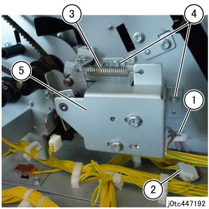
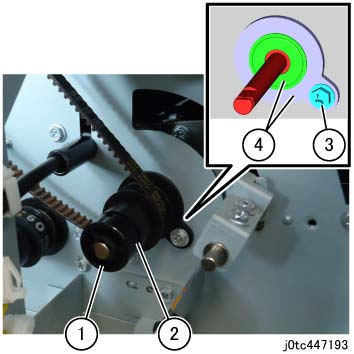
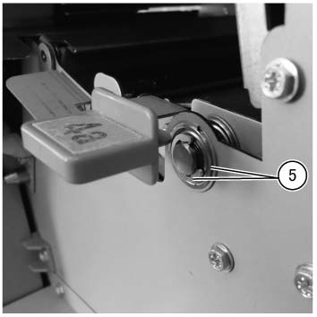
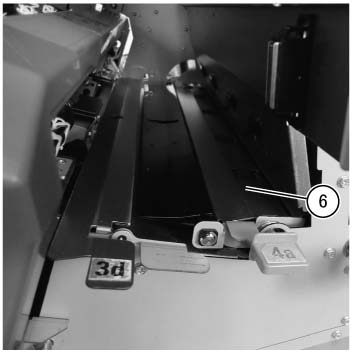
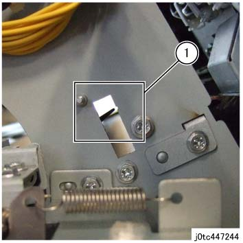
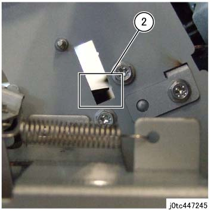
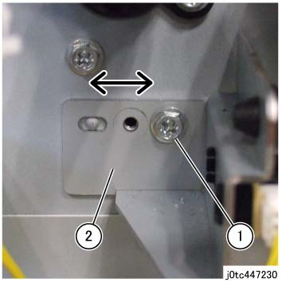
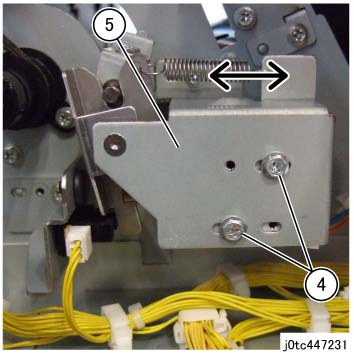

REP 47.27.2 缓冲 挡板 组件 
参考 PL:PL 47.27
Removal

执行IOT关机步骤. 确认电源已关闭并拔掉电源插头.
打开前盖板. (PL 47.1)
拆卸后盖板. (PL 47.2)
拆卸 TCB 出纸 电机组件. (PL 47.30)
松开 皮带 (TCB 出纸 电机). (REP 47.30.4)
拆卸 缓冲 挡板 传感器 组件. (图 1)
释放 卡箍 和 拆卸线束.
拆卸 连接器.
拆卸弹簧.
拆卸螺钉（x2）.
拆卸 缓冲 挡板 传感器 组件.

(图 1) tc447192
拆卸 缓冲 挡板 组件.
拆卸 KL-卡扣. (图 2)
拆卸 Cam 和 Pulley. (图 2)
拆卸螺钉. (图 2)
拆卸轴承 和 Housing. (图 2)

(图 2) tc447193
拆卸E型卡环 和 the Bearing. (图 3)

(图 3) tcw447088
拆卸 缓冲 挡板 组件. (图 4)

(图 4) tcw447089
安装
安装时 the 缓冲 挡板 电磁阀 组件, 调整 其 位置 和/与 以下步骤.
拆卸后盖板. (PL 47.2)
Activate the 缓冲 挡板 组件 和 检查 位置 的 挡板.
当...时 the 挡板 is at the 缓冲 路径 侧面, 确认 it is in the notch (上方) 的 Flame. (图 5)

(图 5) tc447244
当...时 the 挡板 is at the TCB 路径 侧面, 确认 it is in the notch (下方) 的 Flame. (图 6)

(图 6) tc447245
如果 位置 的 挡板 的 缓冲 挡板 组件 不是 与...对齐 the notch of 框架 (下方), 调整 其 位置.
松开螺钉. (图 7)
调整 挡板 位置 的 缓冲 挡板 组件. (图 7)

(图 7) tc447230
如果 位置 的 挡板 不 对齐 使用 notch of 框架 (上方) 甚至 在执行...之后 Steps 1 和 2, 调整 位置 的 电磁阀.
松开螺钉 (x2). (图 8)
调整 挡板 位置 的 缓冲 挡板 组件. (图 8)

(图 8) tc447231
Keep adjusting the 位置 的 挡板 的 缓冲 挡板 组件 直到 it aligns 使用 notch 的 Flame.
在...之后 the 调整, 拧紧螺钉.